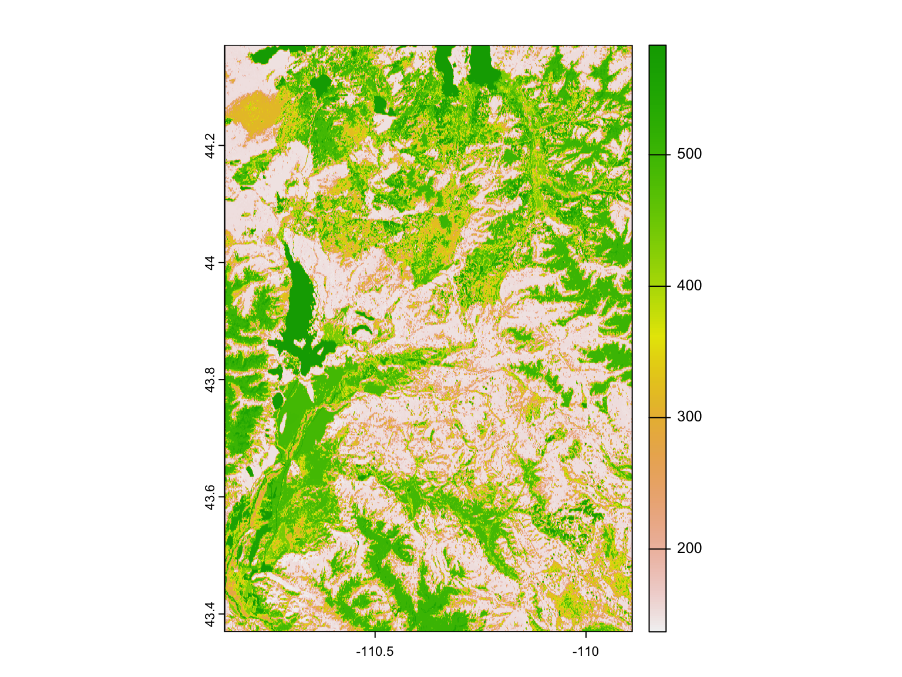
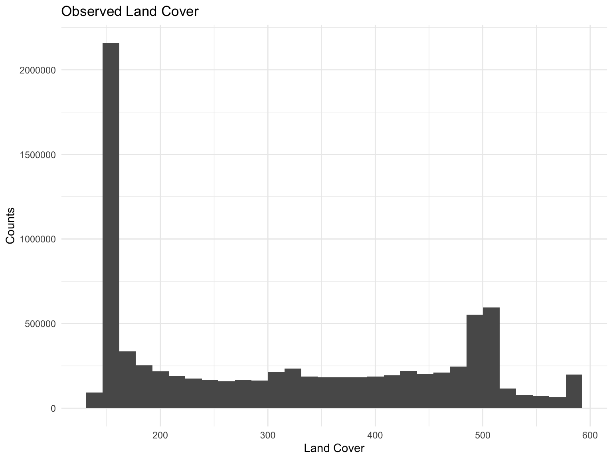
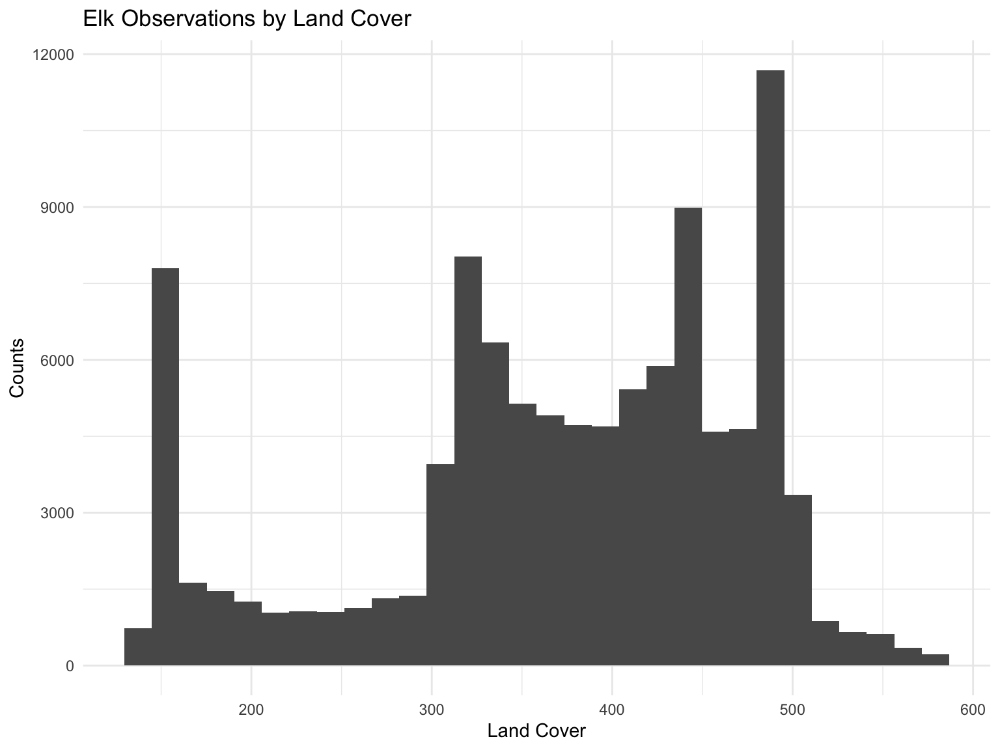
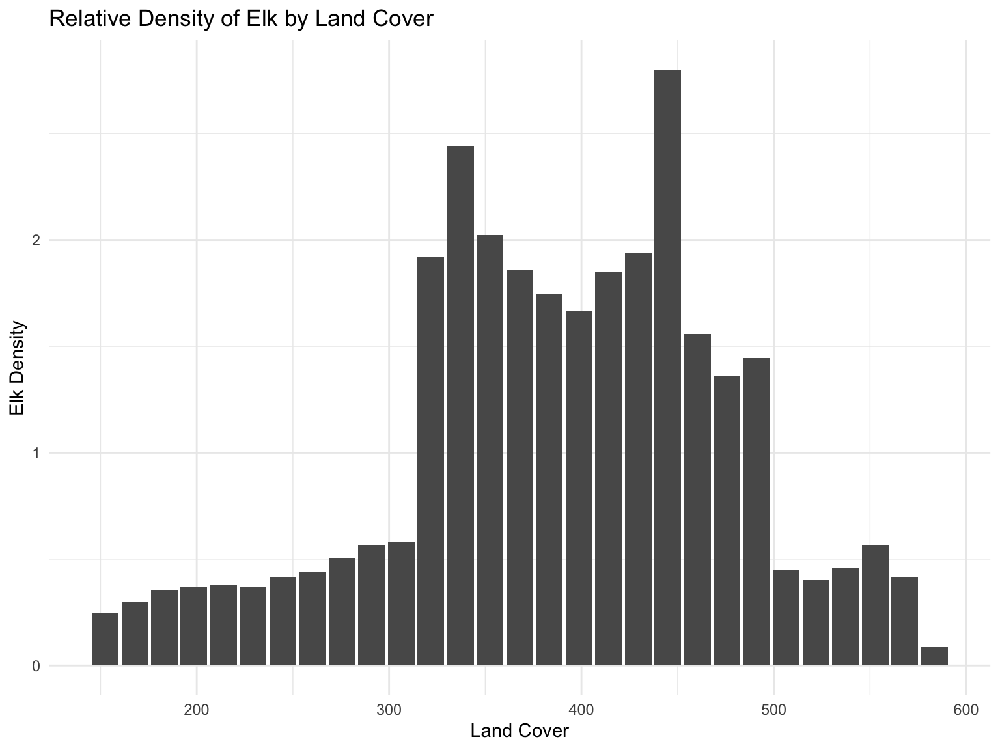

To analyze the land cover data, we begin by reading in the combined
data set from all_data.csv. This data set contains the same
geographic data as the elk.csv data along with land cover
data, temperature, and water quality readings in that same geographic
area. The data processing steps to create this file can be found in the
data cleaning page.
all_data = read_csv('clean_data/all_data.csv')The land cover data for the entire region of elk migration is given below. The yellow regions of the map are fully covered, in many cases by water snow, or vegetation. The large yellow regions represent Jackson lake, Yellowstone Lake, and Heart Lake. The green areas represent land covered by an abundance of foliage or smaller bodies of water, such as creeks. The dark blue and purple regions represent land with scant foliage cover, such as large rocks.
small_land_coord = rast('clean_data/land_cover.tif')
plot(small_land_coord)
Below is a histogram of the distribution of land cover in the entire region. The most common land cover value is 137, representing sparse vegetation. The second most common value is 500, representing thick vegetation or grasses. The maximum value of 583 represents land covered by water.
land_coord_df = as.data.frame(small_land_coord)
land_coord_df |>
ggplot(aes(x = land_cover)) +
geom_histogram() +
labs(title = "Observed Land Cover", x = "Land Cover", y = "Counts") 
Here is the distribution of land cover where elk were observed. It is clear that elk spend more of their time in land with cover between 300 and 500, but this plot is confounded by the distribution of land cover data in the region. In other words, there is much low-cover land, and elk may be forced to spend more time there than they would otherwise prefer.
all_data |>
ggplot(aes(x = land_cover)) +
geom_histogram() +
labs(title = "Elk Observations by Land Cover", x = "Land Cover", y = "Counts") 
In order to get a better understanding of the elk’s habits, we will plot the relative frequency of the time that they spend at each land cover value. We begin by binning each land cover value for the region and the elk to find the densities. We divide the elk density by the regional density of each bin. Plotting, we see that elk prefer to spend their time in the regions of middling land cover.
# Define bin breaks
land_cover_bins <- seq(min(land_coord_df$land_cover), max(land_coord_df$land_cover), length.out = 30)
# Bin the vectors
region_density <- cut(land_coord_df$land_cover, land_cover_bins, right = FALSE, labels = FALSE)
elk_density <- cut(all_data$land_cover, land_cover_bins, right = FALSE, labels = FALSE)
# Calculate sums within each bin
sum1 <- tapply(land_coord_df$land_cover, region_density, sum, na.rm = TRUE) / sum(land_coord_df$land_cover)
sum2 <- tapply(all_data$land_cover, elk_density, sum, na.rm = TRUE) / sum(all_data$land_cover)
# Divide the sums of corresponding bins
relative_land_cover =
data.frame(
land_cover_bins = land_cover_bins[-1],
density_elk = sum2 / sum1)
relative_land_cover |>
ggplot( aes(x = land_cover_bins, y = density_elk)) +
geom_bar(stat = "identity") +
labs(title = "Relative Density of Elk by Land Cover", x = "Land Cover", y = "Elk Density") 
Below we graph the two dimensional densities of the elk’s activity.
map_elk_density =
ggmap(myMap) +
geom_density_2d(data = all_data, aes(x=long, y=lat, color = 'red')) +
ylim(43.4 ,44.3) +
xlim(-110.8, -110.2) +
theme(legend.position = 'none')
land_cover_elk_density=
ggplot() +
geom_spatraster(data = small_land_coord) +
scale_fill_gradient2(low="white", high="lightgrey", guide="colorbar") +
geom_density_2d(data = all_data, aes(x=long, y=lat, color = 'red')) +
ylim(43.4 ,44.3) +
xlim(-110.8, -110.2) +
theme(legend.position = 'none')
map_elk_density + land_cover_elk_densityZooming in on the crossing, we see that the elk take one of three paths between Yellowstone national park and the Elk reserve. The first, and furthest West goes between Jackson Lake on the West and Pilgrim mountain to the East. The middle path follows Pilgrim Creek. The East path follows Pacific Creek. These passages have less land cover than the large basins where the elk spend the majority of their time.
map_elk_path =
ggmap(myMap) +
geom_path(data = all_data, aes(x=long, y=lat, color = 'red'), alpha = 0.5) +
ylim(43.75 ,44.25) +
xlim(-110.8, -110.2) +
theme(legend.position = 'none')
land_cover_elk_path =
ggplot() +
geom_spatraster(data = small_land_coord) +
geom_path(data = all_data, aes(x=long, y=lat, color = 'red'), alpha = 0.5) +
scale_fill_gradient2(low="white", high="darkgrey", guide="colorbar") +
ylim(43.75 ,44.25) +
xlim(-110.8, -110.2)+
theme(legend.position = 'none')
map_elk_path + land_cover_elk_path